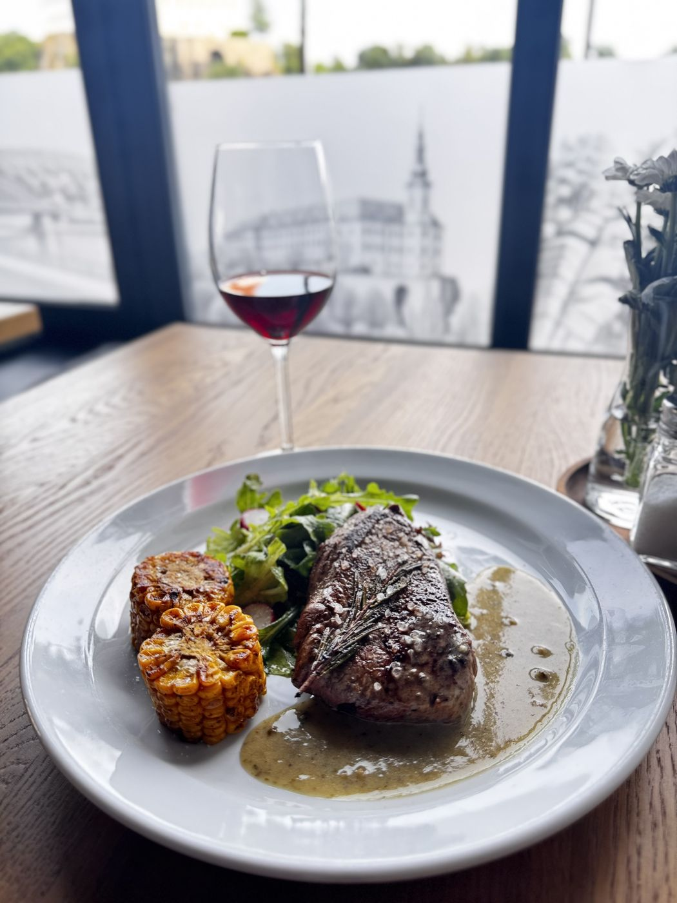
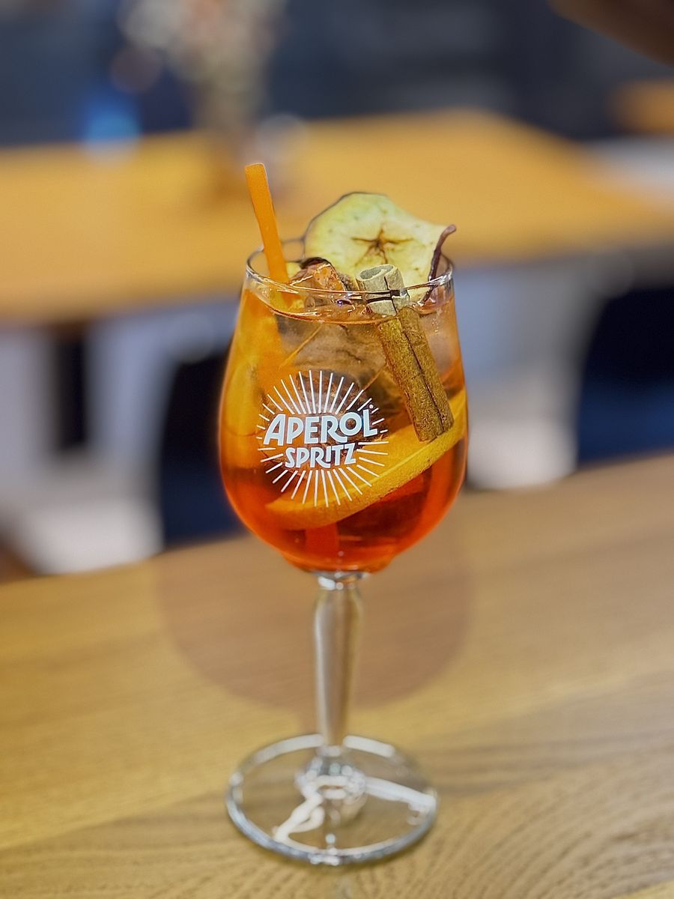
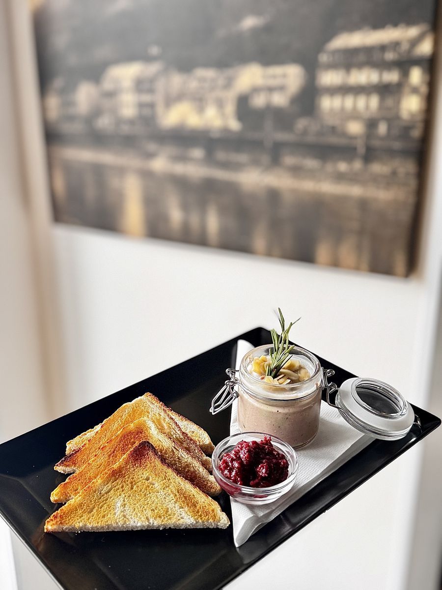

Gastronomický zážitek s výhledem na děčínský zámek
Restaurace v přízemí Penzionu Via Ferrata na Labském nábřeží. Vaříme výborně, ale především opravdu poctivě.
O nás
Výborné, ale hlavně poctivé jídlo
Jsme rodinná restaurace a sesterský podnik Penzionu Via Ferrata. Vaříme tak, jak bychom chtěli jíst sami: pořádné porce, chuť, na které se dá spolehnout, a žádné zkratky.
Přijďte na polední menu, na večeři s přáteli nebo jen na kávu na terase. Nad hlavou vám šplhají lezci na ferratě a přes Labe se díváte na děčínský zámek.


Terasa pod skalou
Z terasy sledujete lezce na via ferratě přímo nad sebou. V létě nejlepší místo v Děčíně.

Výhled na zámek
Uvnitř i venku máte před sebou Labe a děčínský zámek. Klidné místo, kde se dobře povídá.

Snídaně pro hosty penzionu
Hostům Penzionu Via Ferrata podáváme každý den snídani od 8:00 do 10:00.


Pronájem prostor
Celá restaurace jen pro vaši oslavu
Narozeniny, firemní večírek nebo rodinné setkání. Pronajměte si celé prostory i s terasou a o jídlo i pití se postaráme my.
40 hostů uvnitř · plus terasa
- Narozeniny a výročí
- Firemní akce
- Rodinné oslavy
- Křtiny a svatební hostiny

Recenze
Co říkají naši hosté
„Velmi jsem si užil pečenou kachnu, moc dobré. Všem doporučuji, skvělé místo, kde se o své hosty výtečně postarají.“
Google, před měsícem
„Úžasný výhled, kvůli kterému stojí za to posedět. Ceny jsou vzhledem k místu rozumné, jídlo výborné. Kulajda, těstoviny i burger. Káva jako v Itálii.“
Google, před 3 měsíci
„Zastavili jsme se tu spontánně a moc se nám tu líbilo. Jídlo bylo výborné a servírka velmi milá a ochotná. Doporučujeme.“
Google, před 4 měsíci · přeloženo
Kontakt
Těšíme se na Vás
- AdresaLabské nábřeží 317/19, 405 02 Děčín 2
- Telefon+420 793 325 970
- E-mailrestaurace@penzionferrata.cz
- ParkováníBezplatné parkování na ulici
Otevírací doba
| Pondělí | 11:30–22:00 |
| Úterý | 11:30–22:00 |
| Středa | 11:30–22:00 |
| Čtvrtek | 11:30–22:00 |
| Pátek | 11:30–22:00 |
| Sobota | 11:30–22:00 |
| Neděle | 11:30–22:00 |
Snídaně jen pro hosty penzionu, denně 8:00–10:00.